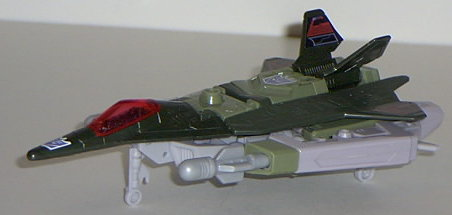
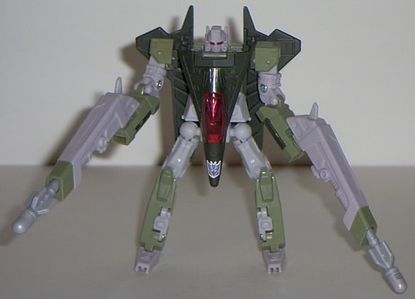
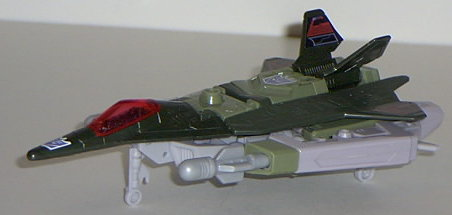
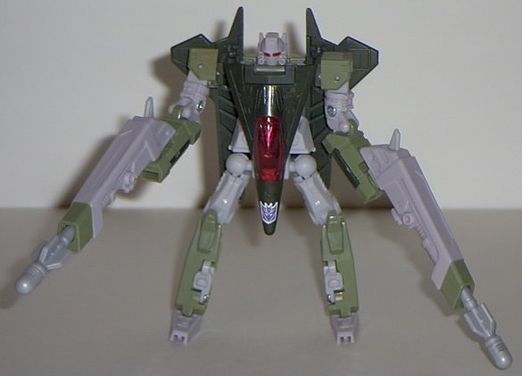
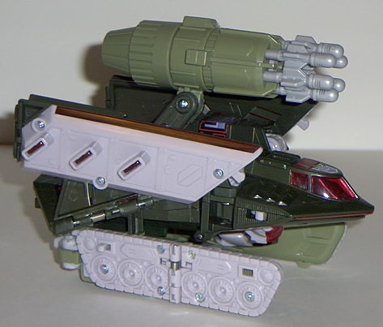
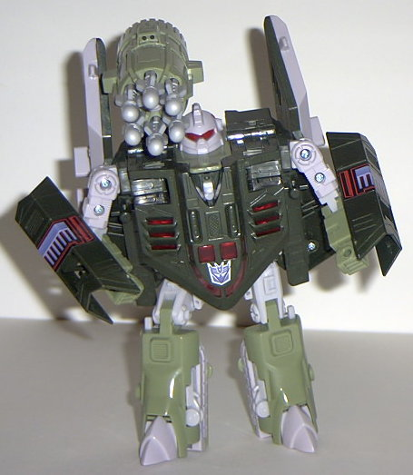
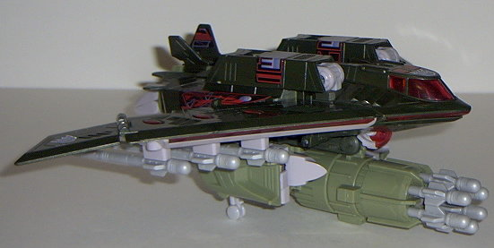

 
Size : Between Basic and Deluxe
Difficulty of Transformation : Medium
Individual Rating : 8.1
Allegiances
: Decepticon
Price
: $25 (U.S.)
Color Scheme
: Light military green,
very dark military green, grayish-white, and some transparent dark red
and light gray
Mold History
: Dreadwing and Smokejumper's
mold dates back to 1994, when they were called "Dreadwing and Smokescreen",
part of Generation 2.
Overall Rating
: 7.8
 Smokejumper
Smokejumper


Size
: Between Basic and Deluxe
Difficulty of Transformation
: Medium
Individual Rating
: 8.1
Vehicle mode is a jet.
This mode is alright overall, but it has a few... oddities. For one, from
any view except from the top, there's so pretty noticeable robot extras
sticking out the bottom of the jet. And even FROM the top, the tips of
the feet stick out a little... Also, the wings are FAR too small proportionally
for this jet. I mean, there's no WAY this thing would be able to fly in
real life. However, the mold detailing is pretty nice, and the transparent
cockpit and Decepticon symbols are good contrasts to the rather mediocre
green-and-white color scheme. Another thing that bugs me is that Smokejumper
(and Dreadwind) have absolutely NO paint detailing. At ALL. (I don't consider
the stamped-on Decepticon symbols paint detailing for the actual figure,
by the way). But it's not quite as noticable as you'd think, since there's
no real large spots of the same color for the most part. Oh, and Smokejumper
has two side-mounted missile launchers that can fire their own missiles
individually. Neat.
Robot mode, though,
is DEFINITELY what this toy was made for. It's awesome. Nice proportions,
EXCELLENT articulation (only major articulation point missing is his waist),
and transparent red eyes that glow rather nicely via their "light piping"
ability. He also has nice big weapons- although I wonder sometimes if they're
TOO big, since his arms can't hold them up that well. His hands are also
on the wrong arms, if you'll look closely- but this has been a problem
with all previous versions of this mold, as well. Smokejumper's "wing"
backpack also tends to come out of its set place rather easily, but it's
not THAT annoying.
 Dreadwind
Dreadwind



Size
: Between Mega and Ultra
Difficulty of Transformation
: Medium
Individual Rating
: 7.4
Vehicle mode is a weird
kind of futuristic tank thing. It's very clear that this mode suffers heavily
from the combined Dreadwing mode (discussed later), as it isn't very good.
The sides just look like... well, like a bunch of panels, and the flat
tank tread pieces that don't even have any paint detailing on them aren't
very convincing either. The missile launcher, however, is VERY cool- It
has SIX missiles in it, and by turning the back half of the launcher, it
fires them one by one for a reasonable distance. A very cool weapon gimmick-
too bad it's really the only thing redeeming about this mode, especially
since it can be used in robot mode just as easily.
Speaking of the robot
mode, it certainly has a unique look to it. Unlike most Transformers, who
either are relatively skinny and nimble-looking or barrel chested, Dreadwind
looks kinda... chunky. Now, that's not necessarily a bad thing- it's certainly
a different approach to a vehicle mode, and makes him look more menacing
than if he were skinny- but I wish that the bottom half of his chest were
a little narrower to give him the appearance of being a bit more muscular.
His puny arms don't help much, either. He has reasonable, if not extraordinary,
articulation in this mode- his head, shoulders (at two points), elbows
(at two points), knees, and hips can move. (Although the latter is restricted
a bit by his chest.) I DO really like his robot face though- very "gas-maskish"
in its appearance, and the glowing transparent red eyes work pretty well.
His wings hang off the back of him, though, which makes him a bit back-heavy.
Dreadwind and Smokejumper
can combine to form Dreadwind, a stealth jet. This mode is a pretty big
improvement over Dreadwind's joke of a tank mode, but it still suffers
from some pretty obvious extras on the bottom, like Dreadwind's robot feet
and head. The top looks great, though, with transparent red windows and
excellent mold detailing (although still no paint detailing). As an added
gimmick, Dreadwing can fire six additional missiles from his wings by pressing
the transparent red button above said missile, causing it to drop like
a bomb. However, the missiles come off a lot, lot, LOT easier than is intended,
and they get really annoying, so I just leave them off all the time. But
it DOES bump up this twosome's missile count to a whopping 15, which is
pretty cool.
The Dreadwind/Smokejumper set has some significant strengths, but also some significant weaknesses. In its favor, they both have excellent articulation, mold detailing, and a buttload of missiles. However, they both suffer from obvious extras in vehicle mode, and a complete lack of paint detailing (although the couple of stickers help some). Still, overall, they're a decent set, and although I wouldn't make them your top priority, they're still worth picking up.
Review by Beastbot